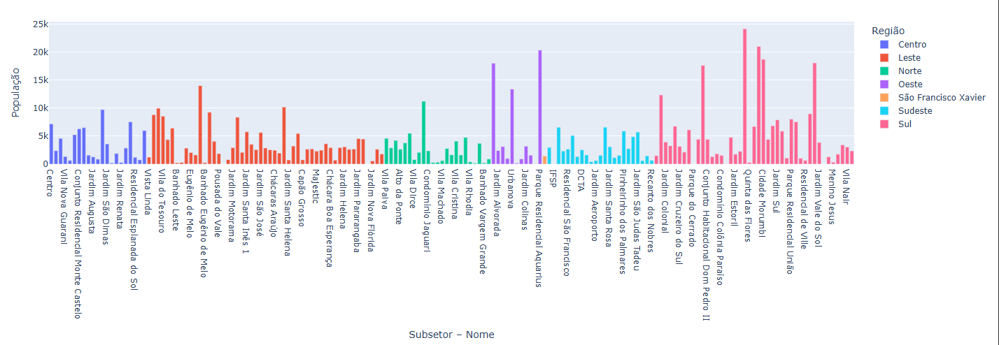
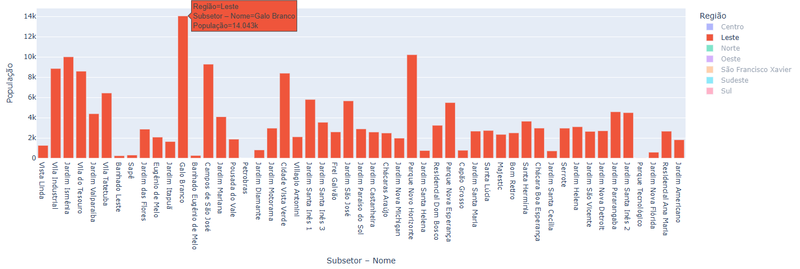

Bem-Vindo ao Planeja SJC!
Aqui, você encontrará uma ampla gama de recursos para explorar e compreender a dinâmica da nossa cidade. Nossa plataforma oferece mapas interativos que permitem visualizar diferentes aspectos do espaço urbano, desde a infraestrutura até as áreas verdes, ajudando você a entender melhor o ambiente em que vive. Além disso, disponibilizamos dados demográficos detalhados, que fornecem uma visão abrangente sobre a população, suas características e necessidades. Esses dados são essenciais para que cidadãos, planejadores urbanos e gestores públicos possam tomar decisões informadas e embasadas.
Sumário dos Gráficos
Distribuição da população por bairros e regiões de São José dos Campos
O gráfico ilustra a população total por bairros e regiões de São José dos Campos, permitindo uma comparação visual da distribuição de habitantes pela cidade.
Dristribuição da População nos Bairros da Região Leste
O gráfico ilustra a população dos diversos bairros da Região Leste, permitindo uma comparação focada na demografia desta área.
Distribuição da população em regiões de São José dos Campos
O gráfico ilustra a população total por bairros e regiões de São José dos Campos, permitindo uma comparação visual da distribuição de habitantes pela cidade.
Dristribuição da População nos Bairros da Região Leste
O gráfico ilustra a população dos diversos bairros da Região Leste, permitindo uma comparação focada na demografia desta área.